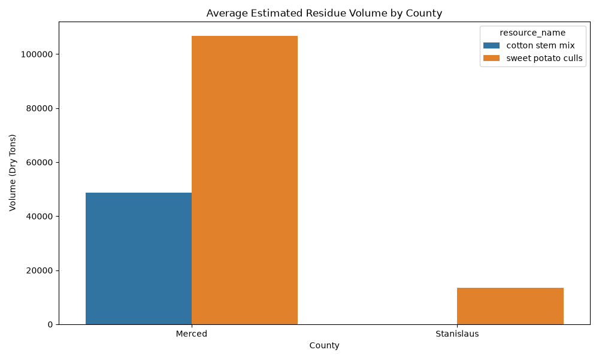
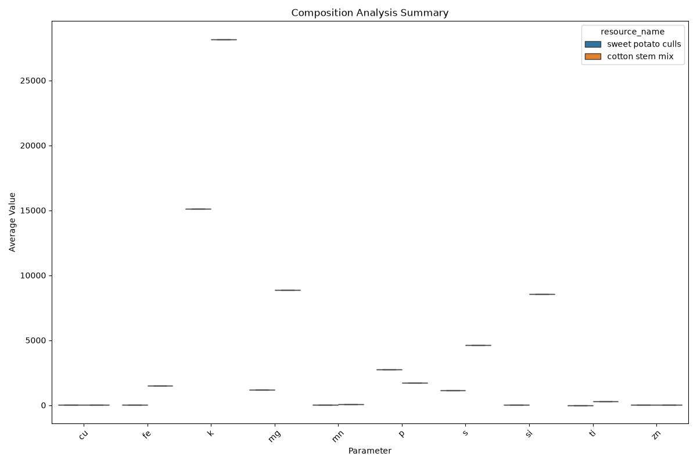

This report summarizes the availability, composition, and conversion
potential
of cotton and sweet potato residues in San Joaquin, Stanislaus, and
Merced
counties.
The following table and chart show the estimated volume of these
resources
across the target counties.

| Resource | County | Year | Estimated Volume (Dry Tons) |
|---|---|---|---|
| cotton stem mix | Merced | 2017 | 57319.2 |
| cotton stem mix | Merced | 2022 | 39981.6 |
| sweet potato culls | Merced | 2023 | 120993 |
| sweet potato culls | Merced | 2024 | 92405.6 |
| sweet potato culls | Stanislaus | 2023 | 14023.6 |
| sweet potato culls | Stanislaus | 2024 | 12900.2 |
Composition data provides insights into the chemical makeup of the
biomass,
which is critical for determining suitable conversion pathways.

| Resource | Parameter | Unit | Average Value |
|---|---|---|---|
| cotton stem mix | al | ppm | 2950.83 |
| cotton stem mix | ash solids | % total weight | 9.15917 |
| cotton stem mix | ba | ppm | 27.5 |
| cotton stem mix | ca | ppm | 19483.3 |
| cotton stem mix | ce | ppm | 47.4 |
| cotton stem mix | cu | ppm | 15.1667 |
| cotton stem mix | fe | ppm | 1486.25 |
| cotton stem mix | k | ppm | 28175 |
| cotton stem mix | la | ppm | 36 |
| cotton stem mix | mg | ppm | 8881.82 |
| cotton stem mix | mn | ppm | 66.75 |
| cotton stem mix | mo | ppm | 6.5 |
| cotton stem mix | moisture | % total weight | 9.61417 |
| cotton stem mix | p | ppm | 1727.5 |
| cotton stem mix | pb | ppm | 5.66667 |
| cotton stem mix | pr | ppm | 58.75 |
| cotton stem mix | rb | ppm | 19.5 |
| cotton stem mix | s | ppm | 4607.5 |
| cotton stem mix | si | ppm | 8540 |
| cotton stem mix | sr | ppm | 84.25 |
| cotton stem mix | th | ppm | 61.9167 |
| cotton stem mix | ti | ppm | 289.333 |
| cotton stem mix | total solids | % total weight | 90.3858 |
| cotton stem mix | u | ppm | 20.75 |
| cotton stem mix | volatile solids | % total weight | 81.225 |
| cotton stem mix | y | ppm | 8.33333 |
| cotton stem mix | zn | ppm | 24.3333 |
| sweet potato culls | al | ppm | 12.5 |
| sweet potato culls | b | ppm | 9.1 |
| sweet potato culls | ca | ppm | 2610 |
| sweet potato culls | cu | ppm | 9.53333 |
| sweet potato culls | fe | ppm | 37.5 |
| sweet potato culls | glucan | % dry weight | 54.1767 |
| sweet potato culls | glucose | % dry weight | 60.2 |
| sweet potato culls | glucose_yld | % of glucan | 37.875 |
| sweet potato culls | k | ppm | 15100 |
| sweet potato culls | lignin | % dry weight | 8.70667 |
| sweet potato culls | mg | ppm | 1175 |
| sweet potato culls | mn | ppm | 12.3333 |
| sweet potato culls | na | ppm | 1195 |
| sweet potato culls | nd | ppm | 10.7 |
| sweet potato culls | nitrogen | pc | 1.57 |
| sweet potato culls | p | ppm | 2735 |
| sweet potato culls | s | ppm | 1126.67 |
| sweet potato culls | si | ppm | 25 |
| sweet potato culls | ti | ppm | 0 |
| sweet potato culls | xylan | % dry weight | 3.17667 |
| sweet potato culls | xylose | % dry weight | 3.61 |
| sweet potato culls | xylose_yld | % of xylan | 64.96 |
| sweet potato culls | zn | ppm | 14.8 |
Data on fermentation yields and parameters. | Resource | Product | Unit
|
Average Value |
|:-------------------|:------------|:-------|----------------😐
| sweet potato culls | 3hptiter | g_l | 3.81667 | | sweet potato culls
|
3hpyield | g_g | 0.0666667 | | sweet potato culls | gluconct0 | g_l |
95.0233 |
| sweet potato culls | gluconcteof | g_l | 53.2033 | | sweet potato
culls |
sugar_cons | pc | 58.25 | | sweet potato culls | sugart0 | g_l | 144.863
| |
sweet potato culls | sugarteof | g_l | 86.61 | | sweet potato culls |
xylconct0
| g_l | 49.84 | | sweet potato culls | xylconcteof | g_l | 33.41 |
Data on gasification outputs and parameters.
No gasification data found for
these resources.